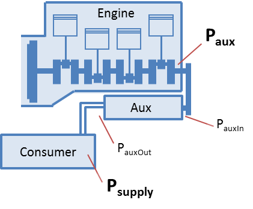

Auxiliaries
In VECTO, there are two options presented for modelling auxiliaries, which are summarised below:
· Classic Vecto Auxiliary: this uses a simple generic approach to consider all types of auxiliaries (as originally implemented in VECTO)
· Bus (Advanced) Auxiliaries: this uses a more detailed and sophisticated approach to model auxiliaries for buses and coaches
Classic Auxiliaries
In VECTO for ‘Classic Vecto Auxiliaries’ a generic map-based
approach was implemented to consider all types of auxiliaries. The supply power
demand for each single auxiliary is defined in the driving cycle. Hence a
time/distance-dependent power demand can be defined. Based on the supply power
and a pre-defined efficiency map the auxiliary input power is calculated. A
constant efficiency determines the losses between auxiliary and engine.
For each auxiliary the power demand is calculated using the following steps:

|
nEng |
= Calculated engine speed. |
[1/min] |
|
TransRatio |
= Speed ratio between auxiliary and engine. Defined in the Auxiliary File. |
[-] |
|
naux |
= Auxiliary speed |
[1/min] |
|
Psupply |
= Effective supply power demand. Defined in the driving cycle. |
[kW] |
|
EffToSply |
= Consumer efficiency. Defined in the Auxiliary File. |
[-] |
|
PauxOut |
= Auxiliary output power |
[kW] |
|
EffMap |
= Auxiliary efficiency map. Defined in the Auxiliary File. |
[kW] = f( [1/min], [kW] ) |
|
PauxIn |
= Auxiliary input power |
[kW] |
|
EffToEng |
= Efficiency of auxiliary (belt/gear) drive. Defined in the Auxiliary File. |
[-] |
|
Paux |
= Mechanical auxiliary power demand at the crank shaft |
[kW] |
Each auxiliary must be defined in the Job
File and each driving cycle used with
this vehicle must include supply power for each auxiliary.
To link the supply power in the driving cycle to the correct auxiliary in the
Job File an ID is used. The corresponding supply power is then named "<Aux_ID>".
Example: The Auxiliary with the ID "ALT" (in the Job File)
is linked to the supply power in the column "<AUX_ALT>" in the
driving cylce.
Advanced Auxiliaries
In the new ‘Bus Auxiliaries’ module, Electrical, Pneumatic and HVAC auxiliaries can be simulated in a more detailed way.
More information on the definition of these advanced auxiliaries is provided on the relevant pages for the different auxiliary types/categories. The advanced auxiliaries set-up is managed using the Advanced Auxiliaries Editor.